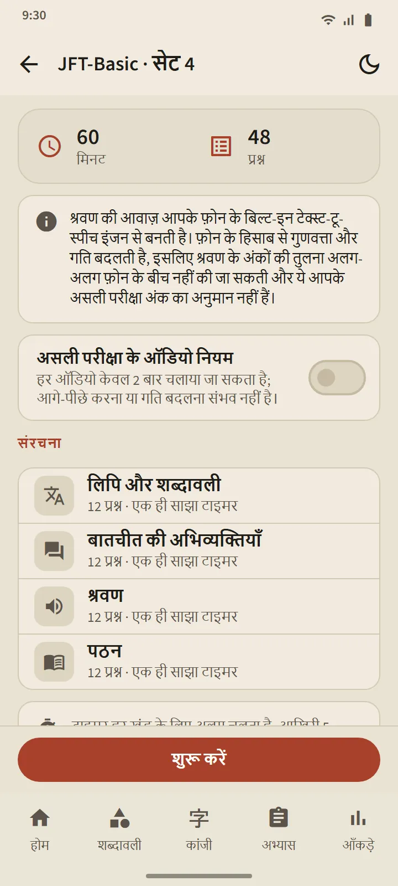
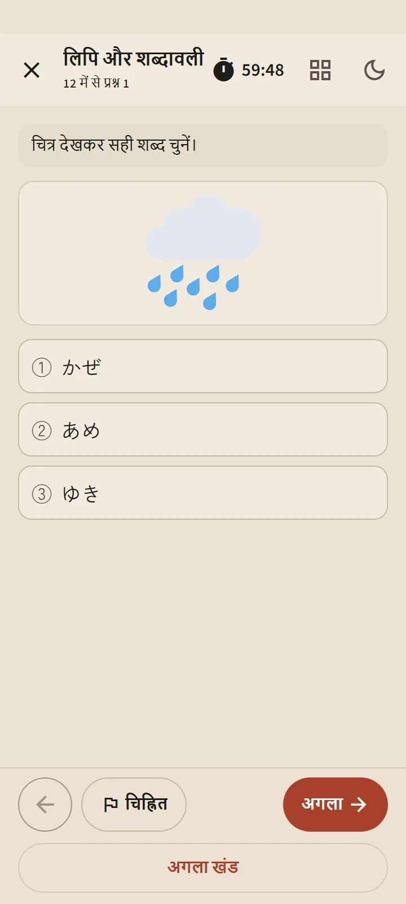
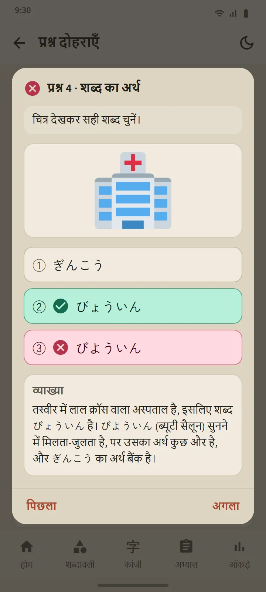

छह स्तर, 24 सेट
अभ्यास टैब में हर स्तर का कार्ड उस स्तर का पेज खोलता है: एक शुरू करें बटन, क्रमांकित सेट के खाने और इतिहास। सारे सेट पूरे होते ही मिश्रित अभ्यास खुलता है, जिसमें वे प्रश्न पहले आते हैं जो आपने कभी नहीं देखे। नए सेट ऐप के अपडेट से आते हैं।
| परीक्षा | सेट | प्रति सेट प्रश्न | समय |
|---|---|---|---|
| JFT-Basic | 8 | 48 | 60 मिनट |
| JLPT N5 | 8 | 68 | 90 मिनट |
| JLPT N4 | 2 | 85 | 115 मिनट |
| JLPT N3 | 2 | 102 | 140 मिनट |
| JLPT N2 | 2 | 107 | 155 मिनट |
| JLPT N1 | 2 | 101 | 165 मिनट |


प्रश्नों के रूप असली परीक्षा जैसे हैं
JFT-Basic के प्रश्नों में तीन विकल्प होते हैं (व्याकरण में चार), स्थितियाँ और निर्देश सीखने वाले की भाषा में होते हैं, और कई प्रश्नों में चित्र होता है, जैसे आधिकारिक नमूना प्रश्नों में। JLPT के प्रश्नों में चार विकल्प, स्तर के अनुसार फ़ुरिगाना, और कई रूपों के पठन-पाठ होते हैं: छोटी कहानियाँ, मेमो, सूचनाएँ, संदेश, ईमेल और जानकारी की तालिकाएँ। हर सेट जारी करने से पहले जाँचा जाता है, और कोई आधिकारिक प्रश्न नहीं उतारा गया है।
शुरू करने से पहले, ब्रीफ़िंग स्क्रीन उस सेट की बनावट दिखाती है: खंड, प्रश्नों की संख्या और समय। समय असली परीक्षा जैसा चलता है: JFT-Basic में एक कुल समय, JLPT में हर खंड का अलग समय। आगे बढ़ने के बाद पिछला खंड बंद हो जाता है, ठीक परीक्षा कक्ष की तरह। आप संदिग्ध प्रश्नों पर निशान लगा सकते हैं, कुछ देर के लिए बाहर जा सकते हैं (घड़ी चलती रहती है), और अभ्यास टैब से दोबारा शुरू कर सकते हैं।


आपके फ़ोन की जापानी आवाज़ में सुनना
सुनने के स्क्रिप्ट आपके फ़ोन के जापानी टेक्स्ट-टू-स्पीच इंजन से पढ़े जाते हैं, हर वक्ता की अलग आवाज़ के साथ। उत्तर के विकल्प केवल सुनाए जाते हैं, छपे नहीं होते, जैसे असली परीक्षा में; JFT-Basic और N5 में चित्र वाले विकल्प होते हैं। "असली परीक्षा के ऑडियो नियम" वाला स्विच ऑडियो चलाने की संख्या को उतने तक सीमित करता है जितना असली परीक्षा देती है: JFT-Basic में दो बार, JLPT में एक बार।
चूँकि आवाज़ हर फ़ोन से आती है, गुणवत्ता डिवाइस के हिसाब से बदलती है; अगर किसी फ़ोन में अभी जापानी आवाज़ नहीं है, तो ऐप दिखाता है कि उसे कैसे इंस्टॉल करें, और जब तक वह नहीं मिलती, सुनने वाला हिस्सा छोड़ दिया जाता है।

आधिकारिक पैमानों पर परिणाम, फिर हर प्रश्न की व्याख्या
JFT-Basic के परिणाम 10–250 की रेखा पर दिखाए जाते हैं, जिस पर 145, 175 और 200 के निशान और उनके स्तर के नाम A1, A2.1 और A2.2 हैं, साथ में यह भी कि असली परीक्षा में हर स्तर किस काम आता है। JLPT के परिणाम अंक वाले हर खंड को उसकी न्यूनतम सीमा के सामने दिखाते हैं, क्योंकि असली परीक्षा में एक भी खंड न्यूनतम से नीचे हो तो नतीजा असफल होता है। दोनों के साथ हर खंड और हर प्रश्न प्रकार में सही उत्तरों का प्रतिशत आता है।
प्रश्न दोहराएँ बटन हर प्रश्न को आपके उत्तर, सही उत्तर और व्याख्या के साथ खोलता है; सुनने के प्रश्नों में उनका स्क्रिप्ट भी दिखता है। व्याख्याएँ 12 भाषाओं में उपलब्ध हैं। हर स्तर का इतिहास आपके हाल के अभ्यास रखता है, और अंकों का चार्ट आँकड़े टैब में है।
ये अंक प्रगति जानने का अनुमान हैं, आपके आधिकारिक परिणाम की भविष्यवाणी नहीं।


मुफ़्त और Premium
हर सेट मुफ़्त संस्करण में खुला है। शुरू करें दबाने के बाद उस स्तर का अगला अभ्यास 7 दिन के लिए बंद हो जाता है; दूसरे स्तर खुले रहते हैं, और इतिहास तथा व्याख्याएँ कभी बंद नहीं होतीं। बंद रहने के दौरान आप एक विज्ञापन देखकर एक अतिरिक्त अभ्यास खोल सकते हैं। Premium में कोई ठहराव नहीं है। प्रश्नों की स्क्रीन पर विज्ञापन किसी को भी कभी नहीं दिखते।